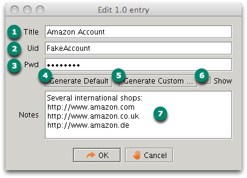
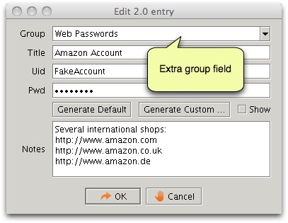

Password Editor
There are two different edit screens, one for version 1.0 entries and
one for 2.0 entries. They only differ slightly, the group field is the
only difference.


- The title of the entry. This is the most important discerning characteristic of an entry.
- The uid associated with this entry.
- The password.
- You can generate a password using the default settings (see the preferences).
- You can also generate a password while overriding the default
settings temporarily. It might be necessary because some application
requests specific password formats which are not supported by the
default settings. Some applications do not support punctuation for
example.
- This option lets you make the password visible (readable).
- Some notes you can add to the entry, for your own use.